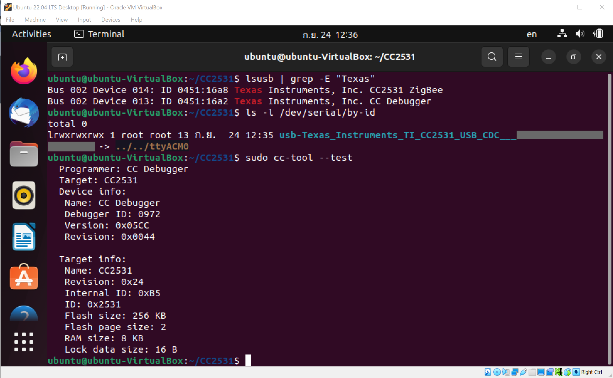

การติดตั้งเฟิร์มแวร์ ZigBee Coordinator สำหรับอุปกรณ์ CC2531 USB Dongle#
▷ อุปกรณ์ CC2531 USB Dongle#
อุปกรณ์ที่ได้นำมาทดลองใช้งานคือ CC2531 USB Dongle (Clone) ผลิตในประเทศจีน ทำงานได้เหมือนกับอุปกรณ์ TI C2531EMK — CC2531 USB Evaluation Module Kit ของบริษัท Texas Instruments (TI) และใช้ชิปไมโครคอนโทรลเลอร์ CC2531F256 (Datasheet)
รูป: อุปกรณ์ CC2531 USB Dongle (Source: https://itead.cc/product/cc2531-usb-dongle/)
ข้อสังเกต: อุปกรณ์ CC2531 USB Dongle มีสายอากาศบนแผ่น PCB (PCB Trace Antenna) หรือ มีคอนเนกเตอร์ให้ต่อสายอากาศภายนอก (External Antenna)
ภายในมีไมโครคอนโทรลเลอร์ 8 บิต (8051 Core) มีหน่วยความจำภายใน 256kB Flash และ 8kB SRAM ชิปรุ่นนี้มีวงจรที่สามารถสื่อสารไร้สายด้วยโพรโตคอล 2.4GHz IEEE 802.15.4 / ZigBee และสามารถเชื่อมต่อกับพอร์ต USB 2.0 ได้
ชิปรุ่นนี้มีการใช้งานมานาน (มากกว่า 10 ปี) และในปัจจุบัน ทางบริษัท TI ก็ได้พัฒนาชิปที่ใช้ซีพียูแบบ 32 บิต ที่ทำงานได้มีประสิทธิภาพดีกว่า และมีหน่วยความจำมากกว่า เช่น CC2538 และ CC2562P ตามลำดับ ดังนั้นอาจจะกล่าวได้ว่า ชิป CC2531 และโมดูล CC2531 USB Dongle จะอยู่ในกลุ่ม Legacy Device ไม่แนะนำให้นำมาใช้ในการออกแบบอุปกรณ์ใหม่
แต่ถ้ามีอยู่แล้ว ก็สามารถนำมาใช้งานร่วมกับซอฟต์แวร์ที่เป็น Open Source เช่น Zigbee2MQTT เพื่อใช้ในการเชื่อมต่อกับอุปกรณ์ประเภทต่าง ๆ ที่สื่อสารด้วยโพรโทคอล ZigBee (สำหรับ Smart Home) และสามารถแปลงเป็นข้อความเพื่อสื่อสารกับ MQTT Broker ได้
▷ ZigBee Protocol Stack#
โดยปรกติแล้วอุปกรณ์ เช่น CC2531 จะต้องมีการติดตั้งเฟิร์มแวร์ ZigBee Protocol Stack (Z-Stack) ของบริษัท TI ซึ่งมีหลายเวอร์ชัน เช่น
- Z-Stack Firmware v1.2 (ZigBee Home Automation - ZHA compliant)
- Z-Stack Firmware v3.0
ในบทความนี้จะกล่าวถึง วิธีการติดตั้งเฟิร์มแวร์ Koenkk / Z-Stack-firmware โดยเลือกใช้ Z-Stack v1.2 ซึ่งเหมาะกับอุปกรณ์ CC2531 มากกว่า Z-Stack v3.0 และจะนำมาใช้งานเป็น ZigBee Coordinator (default) ร่วมกับซอฟต์แวร์ Zigbee2MQTT สำหรับเครื่องคอมพิวเตอร์ของผู้ใช้ หรือ คอมพิวเตอร์ขนาดเล็กที่ทำหน้าที่เป็น Zigbee-to-MQTT Gateway ในระบบเครือข่าย
ข้อสังเกต:
- อุปกรณ์ CC2531 ที่ใช้เฟิร์มแวร์ Z-Stack v1.2 Coordinator สามารถรองรับจำนวนอุปกรณ์ ZigBee Device ได้ค่อนข้างจำกัด
- แต่ถ้าต้องการจะเพิ่มระยะทางในการเชื่อมต่อและจำนวนของอุปกรณ์ในเครือข่าย จะต้องเพิ่มจำนวนอุปกรณ์ CC2531 เพื่อทำหน้าที่เป็น ZigBee Router ในเครือข่าย ZigBee และติดตั้งเฟิร์มแวร์สำหรับ Z-Stack v1.2 Router
ซอฟต์แวร์สำหรับ Linux ที่จะใช้ร่วมกับ CC Debugger คือ CC-Tool และมีขั้นตอนการติดตั้งดังนี้ (การคอมไพล์ซอร์สโค้ด)
# Install necessary software packages.
$ sudo apt install -y libusb-1.0-0-dev libboost-all-dev \
pkg-config autoconf automake libtool build-essential git
# Clone the cc-tool repository from github.
$ git clone https://github.com/dashesy/cc-tool.git
# Change working directory to 'cc-tool'.
$ cd cc-tool
# Run the configure script to generate a Makefile.
$ ./bootstrap
$ ./configure
# Run the make command to compile the source code.
$ make -j4
# Install the program (executable files and libraries).
$ sudo make install
$ cd ../
หรือจะติดตั้งแพ็กเกจ cc-tool ก็เป็นวิธีที่สะดวกกว่า
$ sudo apt install -y cc-tool
การติดตั้งเฟิร์มแวร์ จะต้องใช้อุปกรณ์ Programmer/Debugger โดยในบทความนี้ได้เลือกใช้อุปกรณ์ที่เรียกว่า TI CC Debugger
แต่ก็มีวิธีการอื่นอีกที่ใช้บอร์ดไมโครคอนโทรลเลอร์ เช่น ESP8266 หรือ Raspberry Pi มาใช้ในการอัปโหลดไฟล์เฟิร์มแวร์ไปยังชิป CC2531 ได้ (ดูรายละเอียดได้จาก Zigbee2MQTT: "Alternative firmware flashing methods")
นอกจากอุปกรณ์ TI CC Debugger จะต้องอุปกรณ์ PCB Adapter เพื่อเชื่อมต่อสายไฟไปยังขาของคอนเนกเตอร์แบบ 2x5 pins (ระยะห่างระหว่างขาเพียง 1.28mm) ที่มีอยู่บนแผ่น PCB ของ CC2531 USB Dongle
รูป: อุปกรณ์ TI CC Debugger

รูป: อุปกรณ์ PCB Adapter + Cable
รูป: อุปกรณ์ TI CC Debugger และ CC2531 USB Dongle
รูป: อุปกรณ์ CC2531 USB Dongle ที่มีสายอากาศภายนอก
ขั้นตอนถัดไปคือ การเชื่อมต่ออุปกรณ์ CC2531 USB Dongle และ CC Debugger ที่พอร์ต USB ของคอมพิวเตอร์ผู้ใช้ Linux (จะใช้งานแบบ Native หรือเป็น Ubuntu Virtual Machine หรือ ใช้บอร์ด Raspberry Pi ก็ได้)
ทำคำสั่งตรวจสอบอุปกรณ์ที่กำลังเชื่อมต่อกับพอร์ต USB
$ lsusb | grep -E "Texas"
Bus 001 Device 007: ID 0451:16a8 Texas Instruments, Inc. CC2531 ZigBee
Bus 001 Device 006: ID 0451:16a2 Texas Instruments, Inc. CC Debugger
$ ls -l /dev/serial/by-id
usb-Texas_Instruments_TI_CC2531_USB_CDC__XXXXX -> ../../ttyACM0
จากข้อความเอาต์พุตจะเห็นได้ว่า 0451:16a8 เป็น VendorID:ProductID ของอุปกรณ์ CC2531 USB Dongle
(และมีพอร์ตอนุกรมสำหรับใช้งานชื่อ /dev/ttyACM0)
และ 0451:16a2 เป็น ID ของอุปกรณ์ TI CC Debugger
ทำคำสั่ง cc-tool เพื่อตรวจสอบอุปกรณ์ USB
$ sudo cc-tool --test
Programmer: CC Debugger
Target: CC2531
Device info:
Name: CC Debugger
Debugger ID: 0972
Version: 0x05CC
Revision: 0x0044
Target info:
Name: CC2531
Revision: 0x24
Internal ID: 0xB5
ID: 0x2531
Flash size: 256 KB
Flash page size: 2
RAM size: 8 KB
Lock data size: 16 B
เมื่อดาวน์โหลดไฟล์เฟิร์มแวร์มาแล้ว (ไฟล์ CC2531_DEFAULT_20211115.zip)
ให้ทำคำสั่งต่อไปนี้ เพื่อลบหน่วยความจำแฟลชของชิป CC2531
แล้วจึงเขียนข้อมูลจากไฟล์เฟิร์มแวร์ไปยังหน่วยความจำแฟลช
และตรวจสอบความถูกต้องของข้อมูลด้วยการคำนวณค่า CRC-16
# Extract the firmware file from the archive file.
$ unzip CC2531_DEFAULT_*.zip -d ./firmware
# Erase flash, write firmware, verify flash using CRC-16
# and preserve the secondary MAC address.
$ sudo cc-tool -e -w ./firmware/CC2531ZNP-Prod.hex -v crc -p
▷ การใช้ Ubuntu VM ร่วมกับ Oracle VirtualBox#
ในกรณีที่ติดตั้งและใช้งาน Ubuntu Virtual Machine (VM) โดยใช้ซอฟต์แวร์ Oracle VirtualBox จะต้องมีการตั้งค่าให้ Ubuntu VM เข้าถึงอุปกรณ์ USB ใน Host OS ซึ่งเป็น Windows 10 ในตัวอย่างนี้
รูป: การใช้งาน Oracle VirtualBox VM และ Ubuntu 22.04 LTS Desktop
รูป: การเลือกอุปกรณ์ USB จากรายการ เพื่อให้เข้าถึงได้จาก Ubuntu VM
รูป: การเลือกอุปกรณ์ USB และ CC2531 USB Dongle และ CC Debugger

รูป: การทำคำสั่ง cc-tool ใน Bash Shell ของ Ubuntu 22.04 VM
▷ กล่าวสรุป#
บทความนี้นำเสนอวิธีการและอุปกรณ์ในการติดตั้งเฟิร์มแวร์ Z-Stack ZigBee Coordinator สำหรับอุปกรณ์ CC2531 USB Dongle เพื่อนำมาใช้งานร่วมกับซอฟต์แวร์ Zigbee2MQTT
This work is licensed under a Creative Commons Attribution-ShareAlike 4.0 International License.
Created: 2022-09-24 | Last Updated: 2022-09-27